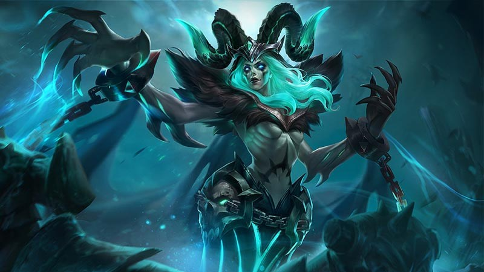
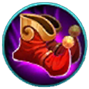
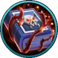
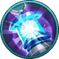
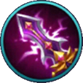

Skill & Build Hero Vexana
Friday, August 3, 2018 9:06 AM

Vexana akhirnya menjadi salah satu mage dengan burst damage sangat besar yang cukup mudah digunakan walaupun tetap jarang digunakan di kompetitif.
Kelebihan
- Burst damage sangat tinggi
- Sangat kuat dalam team fight
- Wave clear sangat cepat
- Cukup mudah digunakan
Kekurangan
- Crowd control yang cukup lemah
- Tidak memiliki escape mechanism
- Kerap menjadi target utama di setiap team fight
Skill Vexana
a. Necromancy Spell
Saat Vexana menyerang. musuh dia akan memberikan status Occult Spell pada musuh yang menjadi target serangan. Bila target mati saat Occult Spell masih aktif, ia akan meledak dan memberikan magic damage pada musuh yang ada di sekitar target.
Occult Spell mampu bertahan selama lima detik dan unit yang menerima damage dari puppet juga akan terkena Necromancy Spell.
Skill pasif ini yang membuat Vexana bisa melakukan wave clear dengan sangat cepat. Yang perlu dia lakukan adalah mengenai semua minion dengan Charmed Specter yang kemudian dikombinasikan dengan serangan Nether Snare di tengah-tengah kerumunan minion. Tujuannya agar memicu ledakan berantai yang akan membuat semua minion terbunuh atau sekarat.
Ledakan berantai tersebut juga bisa digunakan untuk mengalahkan hero-hero charger yang biasanya merangsek maju ke depan untuk mengejar Vexana. Yang perlu kamu lakukan ketika berhadapan dengan hero charger adalah, berada cukup dekat dengan minion musuh lalu melakukan kombinasi skill Charmed Specter dan Nether Snare ke arah hero musuh yang menyerang.
Bila kombinasi ini mengenai hero musuh, dia akan berhenti di tengah-tengah kerumunan minion dan terkena ledakan berantai
b. Charmed Spectre
Vexana mengeluarkan sebuah bayangan tangan yang menjulur ke depan. Saat tangan tersebut mengenai musuh, dia akan terkena magic damage dan berputar-putar di tempat selama beberapa detik.
- Cooldown: 11/10/10/9/9/8 detik
- Mana: 80/90/100/110/120/130 mana
- Damage: 280/310/340/370/400/430 magical damage
- Durasi charmed: 1/1,1/1,2/1,3/1,4/1,5 detik
Charmed Spectre merupakan satu-satunya skill crowd control milik Vexana. Charmed Spectre memiliki traveling time sehingga terkadang sulit digunakan untuk mengenai musuh-musuh yang bisa bergerak dengan cepat. Charmed Spectre membuka peluang skill Nether Snare milik Vexana bisa mengenai target dan menghasilkan damage yang besar.
c. Nether Snare
Vexana memanggil kekuatan lain dari dunia luar dan memberikan damage di titik yang ditunjuk oleh Vexana.
- Cooldown:8/7/7/7/6/6 detik
- Mana: 110/130/150/170/190/210 mana
- Damage: 500/570/640/710/780/850 magical damage
Nether Snare adalah burst damage paling kuat yang dimiliki oleh Vexana. Sayang animasi yang dimiliki oleh Nether Snare sangat lama sehingga musuh bisa menghindari skill ini dengan cukup mudah. Salah satu cara untuk membuat musuh terkena Nether Snare adalah dengan cara dikombinasikan dengan Charmed Spectre miliknya.
Nether Snare membuat Vexana sangat kuat di team fight, terumata ketika dia memiliki rekan satu tim yang bisa mengumpulkan hero musuh di satu tempat. Seperti misalnya Ruby ataupun Tigreal.
d. Cursed Oath
Vexana mengutuk satu musuhnya selama delapan detik. Musuh yang terkena kutukan akan menerima initial damage dan continuous damage. Bila saat terkena kutukan musuh tersebut mati atau durasi kutukan habis, Vexana akan mendapatkan puppet ataupun boneka mayat yang akan memiliki 70 persen atribut target dan memberikan damage terus menerus sebesar lima persen HP maksimal puppet.
Puppet tersebut ikut memberikan status Necromancy Spell pada musuh yang berada di sekitarnya dan bisa bertahan selama 20 detik.
- Cooldown:60/60/60 detik
- Mana: 200/300/400 mana
- Initial damage: 250/300/350 magical damage
- Continuous damage: 75/95/115 magical damage
Cursed Oath merupakan ultimate yang luar biasa fleksibel. Ultimate ini bisa digunakan sebagai finisher bagi hero musuh yang sedang sekarat dan berusaha disengage dari team fight. Selain itu Cursed Oath juga bisa digunakan untuk mengganggu formasi lawan, terutama ketika lawan menggunakan banyak tank yang bisa dikenai Cursed Oath.
Gear Build Vexana
| Nama | Gambar | Info |
|---|---|---|
| Magic Shoes |  | Untuk urusan mobility equipment Vexana memiliki pilihan yang terbatas. Salah satu mobility equipment yang bisa ia buat adalah Magic Shoes karena adanya status pengurangan cooldown yang akan berguna di early game. |
| Enchanted Talisman |  | Enchanted Talisman adalah equipment yang wajib ada bagi para mage yang memiliki skill dengan mana cost yang besar atau cooldown yang cepat. Status 50 magic power, 250 HP, dan 20 persen pengurangan cooldown tergolong lengkap untuk sebuah equipment awal dengan harga yang cukup terjangkau. Kemampuan pasif dari Enchanted Talisman: Mana Spring, akan memberikan regenerasi 10 persen mana dari jumlah mana maksimum setiap 10 detik. Kemampuan pasif ini menjadi penjamin ketersediaan mana saat melakukan spam skill untuk menyerang hero lawan atau wave clear. |
| Concentrated Energy |  | Equipment ini menjadi pilihan kedua kami di early game, karena memiliki Unique berupa Spell Vamp sebesar 30 persen sehingga bersinergi dengan seluruh burst damage yang dimiliki oleh Vexana dari awal game. Selain Unique, status 70 magic power dan 700 HP terbilang sangat bagus, mengingat Vexana sangat membutuhkan tambahan HP karena durabilitynya terbilang rendah khas hero mage. Sementara 70 magic power yang dimiliki gear ini membuat Vexana memiliki damage yang cukup untuk beralih ke late game. |
| Holy Crystal | Holy Crystal menjadi tumpuan damage para mage, termasuk Vexana. Semua ini karena Holy Crystal memiliki penambahan magic power sebesar 95 poin, Unique berupa 25 persen magic power dan peningkatan magic damage sebesar 15 persen setiap 10 detik sekali. |
|
| Devil Tears |  | Devil Tears termasuk core equipmenty untuk Vexana di late game. Dengan adanya Devil Tears, Vexana akan memiliki tambahan magic penetration sebesar 70 persen, selama HP miliknya tidak turun di bawah 70 persen. Sedangkan bila HP-nya turun di bawah 70 persen, status magic penetration Devil Tears bakal melorot ke angka 40 persen. Selain status di atas Devil Tears juga memiliki status utama 65 magic power yang cukup lumayan untuk menambahkan status dasar magic power Vexana walaupun tidak terlalu besar. |